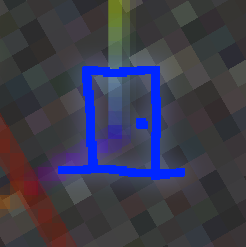

(Image of May, if you couldn't tell)We have alot of informaton on it, but don't know much!
Thta obviously knows alot about May but, he left, so...
We'll have to peace together the missing pieces ourselves!
The leads we do have came from Thta.
They're not alot, but it's all we have right now.
You can look at them by clicking the link below.